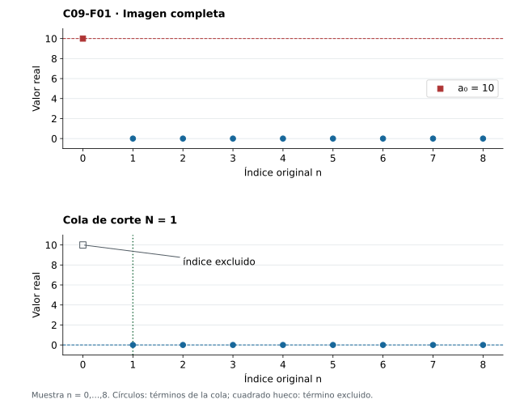
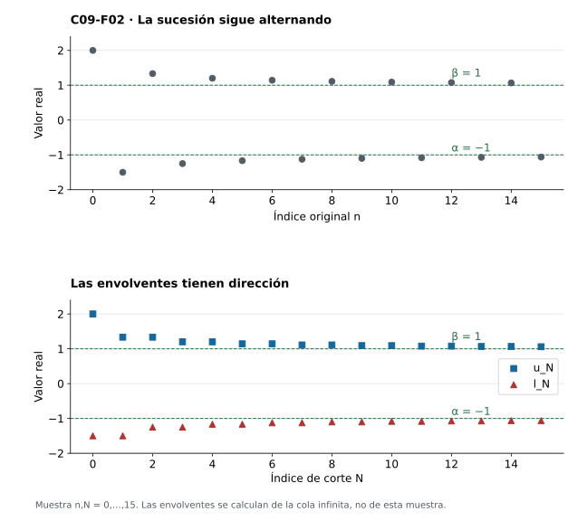
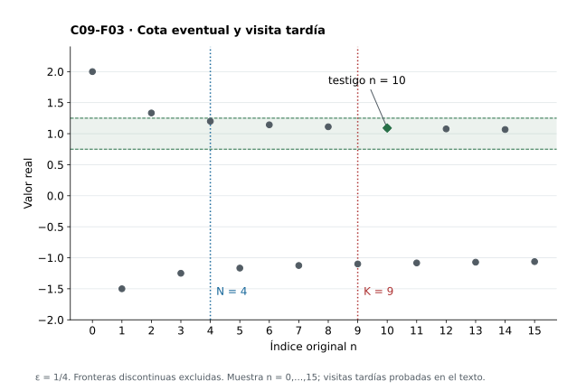
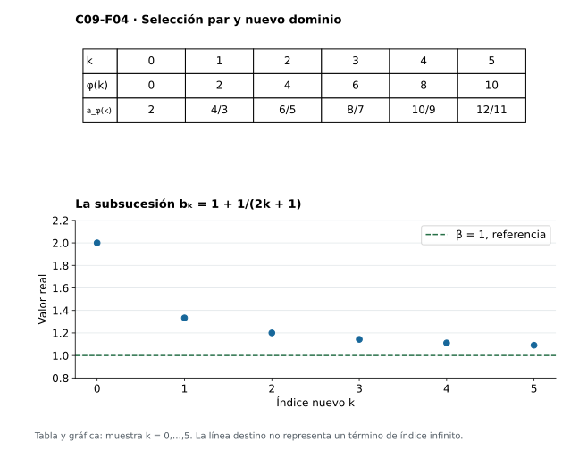
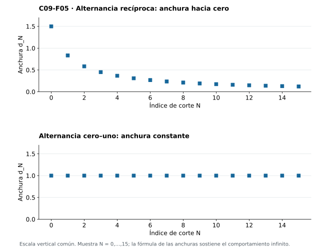
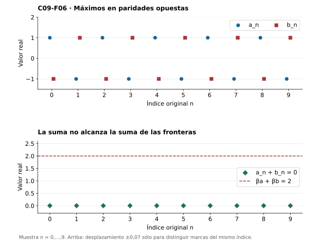

Capítulo 9 — Límite superior e inferior: las envolventes de una cola
Índice del libro · Ejercicios de este capítulo
Un único término puede fijar el supremo de toda una sucesión y desaparecer de cualquier descripción de su comportamiento tardío. En \(10,0,0,\ldots\), por ejemplo, la mayor altura es \(10\), aunque la sucesión converge a cero. Para una sucesión acotada que siga oscilando, necesitamos fronteras que se ajusten al retirar el comienzo. Las obtendremos mirando el supremo y el ínfimo de cada cola.
Aunque los términos salten en ambas direcciones, al eliminar posiciones no aparecen valores nuevos. Los supremos de cola sólo podrán bajar y los ínfimos sólo podrán subir; esa monotonía permitirá aplicar C07 y obtener dos límites reales. Trabajaremos con sucesiones acotadas y extremos finitos, usando las nociones de cola de C05, supremo e ínfimo de C02–C03 y convergencia y extracciones de C06–C08.
9.1. Conservar la cola y olvidar el prefijo
En la sucesión \(a_0=10\), \(a_n=0\) para \(n\ge1\), la imagen completa contiene \(10\), pero la cola desde \(1\) ya no lo contiene. El corte temporal determina qué conjunto de valores debemos estudiar.
Fijemos una sucesión real acotada \(a:\mathbb N\to\mathbb R\), con \(\mathbb N=\{0,1,2,\ldots\}\). Para cada \(N\in\mathbb N\), escribimos \(T_N=\{a_n:n\ge N\}\subseteq\mathbb R\). El corte y los índices de la cola son naturales; los elementos de \(T_N\) son términos reales. El conjunto pierde el orden y las multiplicidades: una cola constante dispone de infinitos índices y sólo un valor.
Cada \(T_N\) contiene \(a_N\) y es acotado. La completitud asegura los reales
\[ \ell_N=\inf T_N,\qquad u_N=\sup T_N. \]
Los extremos satisfacen \(\ell_N\le a_n\le u_N\) para todo \(n\ge N\). Al variar el corte obtenemos dos funciones \(\ell,u:\mathbb N\to\mathbb R\), las envolventes inferior y superior. Son nuevas sucesiones y pueden tomar valores que ninguna evaluación de \(a\) alcance, por lo que en general no son subsucesiones de ella.
La propiedad extremal permite aproximarse a ambas barreras desde la propia cola. Dados \(N\) y \(\eta>0\), existen \(p,q\ge N\) con \(\ell_N\le a_p<\ell_N+\eta\) y \(u_N-\eta<a_q\le u_N\). Si todos los términos fueran a lo sumo \(u_N-\eta\), ese real sería una cota superior menor que el supremo. Si todos fueran al menos \(\ell_N+\eta\), tendríamos una cota inferior mayor que el ínfimo. Ambas contradicciones proporcionan valores en \(T_N\) y, por tanto, índices al menos \(N\). No se exige que las barreras se alcancen ni se eligen simultáneamente todos los testigos.
En \(a_n=1/(n+1)\), el término de índice \(N\) domina los posteriores, así que \(u_N=1/(N+1)\) se alcanza. Todos los términos son positivos. Para \(\eta>0\), el índice \(n=\max\{N,\lfloor1/\eta\rfloor\}+1\) pertenece a la cola y cumple \(0<a_n<\eta\), usando el piso de C06. Por tanto \(\ell_N=0\) y no se alcanza.
También puede faltar el supremo entre los términos: para \(x_n=1-1/(n+1)\), cada cola tiene la cota superior \(1\) y ningún término igual a ella. Con el mismo índice anterior obtenemos \(x_n>1-\eta\), lo que acredita \(\sup T_N(x)=1\). En la sucesión del prefijo excepcional, en cambio, \(u_0=10\) y \(u_N=0\) desde \(N=1\), mientras \(\ell_N=0\) siempre. El alcanzamiento y la dependencia del corte son cuestiones distintas.

Ejercicios de la sección 9.1
Ejercicio 1. Un extremo inicial
Sea \(a_0=7\), \(a_1=-4\) y \(a_n=1\) para \(n\ge2\). Determina todos los conjuntos de cola y sus extremos.
Ver solución del ejercicio 1
\(T_0=\{-4,1,7\}\), \(T_1=\{-4,1\}\) y \(T_N=\{1\}\) para \(N\ge2\). Así \((\ell_0,u_0)=(-4,7)\), \((\ell_1,u_1)=(-4,1)\) y \((\ell_N,u_N)=(1,1)\) desde el corte dos. Se distinguen los conjuntos de valores de los infinitos conjuntos de índices.
La figura 9.1 permite separar el efecto del prefijo de los extremos de las colas posteriores.
Ejercicio 2. Una frontera ausente
Para \(a_n=2-1/(n+1)\), calcula \(\ell_N,u_N\) y decide cuáles se alcanzan.
Ver solución del ejercicio 2
Los términos crecen desde \(a_N\), así \(\ell_N=2-1/(N+1)\) y se alcanza en \(N\). Todos son menores que dos. Para \(\eta>0\), escoger \(n\ge N\) con \(1/(n+1)<\eta\) da \(a_n>2-\eta\), por lo que \(u_N=2\) y no se alcanza.
Ejercicio 3. Aproximación bilateral
Demuestra directamente desde las definiciones que para \(\eta>0\) existen \(p,q\ge N\) con \(a_p>u_N-\eta\) y \(a_q<\ell_N+\eta\), sin suponer máximos o mínimos.
Ver solución del ejercicio 3
Si todo término posterior fuera a lo sumo \(u_N-\eta\), ese real sería cota superior estrictamente menor que \(u_N\). Si todo término fuera al menos \(\ell_N+\eta\), sería cota inferior estrictamente mayor que \(\ell_N\). Ambas conclusiones contradicen la optimalidad respectiva. Los valores que evitan esas contradicciones pertenecen a \(T_N\) y por tanto tienen índices posteriores al corte.
Ejercicio 4. Cuándo se retira una altura
Prueba \(T_N=\{a_N\}\cup T_{N+1}\). ¿Cuándo puede ser estricta la inclusión \(T_{N+1}\subseteq T_N\)?
Ver solución del ejercicio 4
Cada índice al menos \(N\) es \(N\) o es al menos \(N+1\), lo que prueba la igualdad; la inclusión inversa se sigue de los mismos índices. La inclusión es estricta exactamente cuando \(a_N\) no reaparece en ningún índice posterior. Que se retire un índice no obliga a retirar su valor.
Ejercicio 5. Acotación eventual
Una sucesión real satisface \(|a_n|\le M\) para \(n\ge N_0\), donde \(M\ge0\). Demuestra que es acotada globalmente y que puede entrar en este capítulo.
Ver solución del ejercicio 5
Si \(N_0=0\), sirve \(M\). Si \(N_0>0\), el prefijo contiene finitos términos y \(B=\max\{M,|a_0|,\ldots,|a_{N_0-1}|\}\) es una cota de todas las magnitudes. Por tanto cada cola es no vacía y acotada y la construcción de ambos extremos finitos queda autorizada.
9.2. Dos envolventes que sí tienen dirección
La inclusión \(T_{N+1}\subseteq T_N\) obliga a las envolventes a mantener una dirección. Cada cota superior de \(T_N\) sigue dominando \(T_{N+1}\), y cada cota inferior sigue por debajo de sus valores. La optimalidad de sus extremos da
\[ \ell_N\le\ell_{N+1}\le u_{N+1}\le u_N. \]
Si \(m\le a_n\le M\) para todo índice, también \(m\le\ell_N\le u_N\le M\). La envolvente inferior es no decreciente y acotada superiormente; la superior es no creciente y acotada inferiormente. Los teoremas de C07 garantizan sus límites reales y permiten definir
\[ \alpha=\liminf_{n\to\infty}a_n:=\lim_{N\to\infty}\ell_N=\sup_{N\in\mathbb N}\ell_N, \qquad \beta=\limsup_{n\to\infty}a_n:=\lim_{N\to\infty}u_N=\inf_{N\in\mathbb N}u_N. \]
El supremo exterior reúne los valores de \(\ell\); el ínfimo exterior reúne los de \(u\). Cambiar el orden altera la pregunta: \(\sup_N\sup T_N=u_0\) sigue describiendo la imagen completa. La completitud proporcionó primero los extremos de cada cola y, mediante C07, proporciona los límites de las envolventes. La unicidad de C06 hace unívocas esas definiciones.
El orden \(\ell_N\le u_N\) pasa al límite y da \(\alpha\le\beta\). Como \(\alpha\) es supremo de la envolvente inferior y \(\beta\) es ínfimo de la superior, tenemos \(\ell_N\le\alpha\) y \(\beta\le u_N\) para cada corte. Esto deja abierta la posición de los términos respecto del intervalo \([\alpha,\beta]\), incluso en colas muy tardías.
Para \(a_n=(-1)^n(1+1/(n+1))\), definamos \(e(N)=N\) si \(N\) es par y \(e(N)=N+1\) si es impar; definamos \(o(N)=N\) si \(N\) es impar y \(o(N)=N+1\) si es par. Son los primeros índices de cada paridad disponibles en la cola. Los valores pares son positivos y disminuyen dentro de su paridad; los impares son negativos y aumentan. Por ello \(u_N=1+1/(e(N)+1)\) y \(\ell_N=-1-1/(o(N)+1)\). Como \(e(N),o(N)\ge N\), las correcciones están acotadas por \(1/(N+1)\) y tienden a cero: \(\alpha=-1\), \(\beta=1\). Todos los términos siguen fuera de \([-1,1]\).
La figura 9.2 representa esa diferencia: la sucesión original alterna y sus dos envolventes se mueven monótonamente hacia fronteras distintas. Hacer converger las envolventes no ha hecho converger a \(a\).

Ejercicios de la sección 9.2
Ejercicio 6. Alternancia con margen decreciente
Calcula las envolventes y los extremos de \(a_n=3+(-1)^n(2+1/(n+1))\).
Ver solución del ejercicio 6
Con \(e(N)\) par y \(o(N)\) impar mínimos posteriores, \(u_N=5+1/(e(N)+1)\) y \(\ell_N=1-1/(o(N)+1)\). Aquí \(e(N)=N\) para \(N\) par y \(N+1\) para \(N\) impar; \(o(N)=N\) para \(N\) impar y \(N+1\) para \(N\) par. Todo valor par es mayor que \(5\) y decrece dentro de esa paridad; todo valor impar es menor que \(1\) y aumenta. Así los dos primeros índices disponibles dan, respectivamente, el máximo y el mínimo de la cola. Las correcciones tienden a cero porque sus índices son al menos \(N\). Así \(\alpha=1\), \(\beta=5\).
La figura 9.2 ayuda a leer la dirección de cada envolvente aunque la sucesión original alterne.
Ejercicio 7. Orden en dos niveles
Prueba \(\inf T_0\le\alpha\le\beta\le\sup T_0\) e indica los dos niveles de completitud usados.
Ver solución del ejercicio 7
Cada cola está dentro de \(T_0\), de modo que \(\inf T_0\le\ell_N\le u_N\le\sup T_0\). El paso al límite conserva orden y da la cadena. Completitud da primero sup/inf reales de cada cola y después, mediante C07, los límites reales de las envolventes monótonas acotadas.
Ejercicio 8. Invertir operaciones
Compara \(\inf_N\sup_{n\ge N}a_n\) con \(\sup_N\inf_{n\ge N}a_n\) para la alternancia cero–uno. ¿Son operaciones intercambiables?
Ver solución del ejercicio 8
Cada cola contiene cero y uno. La primera expresión vale uno y la segunda cero. Son \(\beta\) y \(\alpha\), respectivamente; no se intercambian en general.
El orden de las dos operaciones de extremos se distingue en la figura 9.2.
Ejercicio 9. Monotonía original
Si \(a\) es acotada y no decreciente, identifica sus dos envolventes y sus extremos.
Ver solución del ejercicio 9
\(\ell_N=a_N\) porque es el menor término posterior. Sea \(s=\sup T_0\). Es también supremo de cada cola: cualquier cota de una cola acota los términos anteriores porque son a lo sumo \(a_N\). Así \(u_N=s\) para todo \(N\). C07 da \(a_N\to s\), y por tanto \(\alpha=\beta=s\).
Ejercicio 10. Igualdad de límites, desigualdad de objetos
Construye dos sucesiones distintas con las mismas envolventes superior e inferior en todos los cortes.
Ver solución del ejercicio 10
La alternancia \(a_n=0\) para pares y uno para impares, y la alternancia inversa \(b_n=1-a_n\), son distintas en cada índice. Cada cola de ambas contiene cero y uno, por lo que sus envolventes son idénticas: \(\ell_N=0,u_N=1\). Igualdad de envolventes no implica igualdad de las funciones originales.
La figura 9.2 permite comparar las envolventes; aquí la coincidencia se ha demostrado para dos funciones diferentes.
9.3. Fronteras eventuales y visitas tardías
Podemos reconocer una frontera superior sin calcular por separado cada \(u_N\). Debe quedar toda una cola por debajo de cualquier altura ligeramente mayor y deben sobrevivir visitas por encima de cualquier altura ligeramente menor. Para una sucesión acotada, un real \(b\) es su límite superior si y sólo si cumple
\[ \forall\varepsilon>0\ \exists N\ \forall n\ge N: a_n<b+\varepsilon, \qquad \forall\varepsilon>0\ \forall K\ \exists n\ge K: a_n>b-\varepsilon. \]
Supongamos primero que \(b=\beta\). La convergencia \(u_N\to\beta\) proporciona, para \(\varepsilon>0\), un corte con \(u_N<\beta+\varepsilon\); todos los términos de esa cola quedan por debajo. Para cualquier corte \(K\), aproximamos su supremo y obtenemos algún \(n\ge K\) con \(a_n>u_K-\varepsilon\ge\beta-\varepsilon\). Esta visita puede cambiar al recibir otra tolerancia o corte; no controla por sí sola los demás términos.
A la inversa, la primera condición da \(u_N\le b+\varepsilon\) para algún corte. La desigualdad puede dejar de ser estricta al tomar supremo, pero basta para deducir \(\beta\le b+\varepsilon\). La segunda condición da \(u_K>b-\varepsilon\) para cada \(K\), y el paso al límite proporciona \(\beta\ge b-\varepsilon\). Si \(\beta\ne b\), tomar como tolerancia la mitad de su distancia contradice una de esas dos comparaciones; luego \(\beta=b\).
Por abajo, \(c=\alpha\) si y sólo si, para cada \(\varepsilon>0\), alguna cola satisface \(a_n>c-\varepsilon\) y, después de cualquier corte \(K\), existe \(n\ge K\) con \(a_n<c+\varepsilon\). La convergencia \(\ell_N\to\alpha\) acredita la primera condición y la aproximación del ínfimo acredita la segunda. Recíprocamente, la cota eventual da \(\alpha\ge c-\varepsilon\), y las visitas dan \(\ell_K<c+\varepsilon\) para cada \(K\), luego \(\alpha\le c+\varepsilon\). La misma elección de la mitad de una supuesta distancia positiva prueba \(\alpha=c\).
Un conjunto infinito de índices no cabe en un prefijo finito y supera cualquier corte. A la inversa, un conjunto finito no vacío queda antes de \(1\) más su máximo, y el vacío no aporta visitas ni desde \(0\). Por eso «arbitrariamente tarde» equivale a «para infinitos índices», aun cuando éstos repitan un mismo valor.
Si \(t>\beta\), usamos \(\varepsilon=(t-\beta)/2\): alguna cola queda por debajo de \(\beta+\varepsilon<t\), por lo que sólo hay finitos índices con \(a_n\ge t\). Si \(t<\beta\), la tolerancia \(\varepsilon=\beta-t\) da un término con \(a_n>t\) después de cada corte, es decir, infinitas visitas. En \(t=\beta\) no hay una respuesta única: la constante \(1\) alcanza su frontera siempre y \(1-1/(n+1)\) no la alcanza nunca. Dualmente, para \(t<\alpha\) hay sólo finitos índices con \(a_n\le t\), mientras que para \(t>\alpha\) hay infinitos con \(a_n<t\).
Reuniendo por máximo los cortes de las dos cotas eventuales, para cada \(\varepsilon>0\) una cola queda en \((\alpha-\varepsilon,\beta+\varepsilon)\). El ejemplo alternante anterior muestra por qué no podemos reducir esa garantía al intervalo exacto \([\alpha,\beta]\).
En la figura 9.3, con tolerancia \(1/4\), el corte \(4\) basta para que todos los términos sean menores que \(5/4\). Recibido el corte \(9\), el índice \(10\) aporta además una visita mayor que \(3/4\), pues \(a_{10}=12/11\). Los términos negativos quedan fuera de esa ventana alrededor de \(\beta=1\) sin contradecir la caracterización.

Ejercicios de la sección 9.3
Ejercicio 11. Umbral persistente
Para una sucesión acotada define \(A=\{t\in\mathbb R:\{n:a_n>t\}\text{ es infinito}\}\). Prueba que \(A\) es no vacío, acotado superiormente y \(\sup A=\beta\).
Ver solución del ejercicio 11
Una cota inferior global \(m\) hace que \(m-1\in A\), por lo que es no vacío. Una cota superior global \(M\) acota a \(A\). Si \(t>\beta\), sólo hay finitas visitas sobre \(t\), luego \(t\notin A\); así \(\beta\) acota \(A\). Todo \(t<\beta\) pertenece a \(A\) por §9.3; en particular \(\beta-\varepsilon\in A\) para toda tolerancia. Ninguna cota menor que \(\beta\) puede acotar a \(A\), por lo que su supremo es \(\beta\).
Ejercicio 12. Umbral eventual
Define \(B=\{t\in\mathbb R:\{n:a_n>t\}\text{ es finito}\}\). Prueba \(\inf B=\beta\) y explica por qué \(\beta\) puede o no pertenecer a \(B\).
Ver solución del ejercicio 12
\(B\) contiene una cota superior global y es no vacío. Ningún \(t<\beta\) pertenece a \(B\), pues hay infinitas visitas sobre él; así \(\beta\) es cota inferior. Todo \(t>\beta\) pertenece a \(B\), luego hay elementos arbitrariamente próximos por arriba y \(\inf B=\beta\). Para la constante uno, \(\beta=1\in B\) porque no hay términos mayores que uno. Para \(1+1/(n+1)\), \(\beta=1\notin B\) porque todos los términos son mayores.
Ejercicio 13. Probar una frontera candidata
Supón que para cada \(\varepsilon>0\) una cola satisface \(a_n<4+\varepsilon\) y que después de cada corte existe \(a_n>4-\varepsilon\). Demuestra \(\beta=4\) sin suponer que la sucesión converge.
Ver solución del ejercicio 13
La cota eventual implica \(u_N\le4+\varepsilon\) para algún corte, y por tanto \(\beta\le4+\varepsilon\). Las visitas implican \(u_K>4-\varepsilon\) para cada corte y por límite \(\beta\ge4-\varepsilon\). Si \(\beta\) difiriera de cuatro, elegir la mitad de la distancia como tolerancia contradiría una desigualdad. Por tanto \(\beta=4\), sin control sobre un posible extremo inferior distinto.
En la figura 9.3 se distinguen la cota de toda una cola y la visita que sobrevive a cada corte; la prueba necesita ambas.
Ejercicio 14. Visitas con una sola tolerancia
¿Basta que haya infinitos términos con \(a_n>2-1/2\) para concluir \(\beta=2\)? Da un contraejemplo acotado.
Ver solución del ejercicio 14
No. La constante \(a_n=7/4\) satisface la visita con esa tolerancia y tiene \(\beta=7/4\). Falta exigir todas las tolerancias y la cota eventual superior. Incluso todas las visitas por abajo sólo darían \(\beta\ge2\).
Las dos condiciones de la figura 9.3 muestran lo que queda pendiente al comprobar una sola tolerancia.
Ejercicio 15. Versión inferior por umbrales
Prueba \(\alpha=\inf\{t:\{n:a_n<t\}\text{ es infinito}\}\).
Ver solución del ejercicio 15
El conjunto es no vacío: si \(M\) acota superiormente a \(a\), \(M+1\) pertenece a él. Está acotado inferiormente por una cota inferior global. Si \(t<\alpha\), las visitas por debajo de \(t\) son finitas por la cota inferior eventual con tolerancia \((\alpha-t)/2\). Si \(t>\alpha\), la condición de visitas con tolerancia \(t-\alpha\) da infinitos términos menores que \(t\). Por ello \(\alpha\) es cota inferior y hay elementos arbitrariamente próximos por arriba, lo que identifica el ínfimo.
9.4. Alcanzar las fronteras mediante extracciones
Las fronteras son reales construidos a partir de colas. Para relacionarlas con los puntos secuenciales de C08, llamaremos \(\operatorname{LimSub}(a)\) al conjunto de límites de todas las subsucesiones convergentes. Demostraremos que sus mínimo y máximo son \(\alpha\) y \(\beta\): habrá que obtener extracciones hacia ambos y después comparar cualquier otro destino con ellos.
Dados \(\delta>0\) y un corte \(K\), elegimos un corte \(H\) desde el que \(a_n<\beta+\delta\). La condición de visitas aplicada después de \(\max\{H,K\}\) proporciona un término que cumple también \(a_n>\beta-\delta\). Así encontramos \(|a_n-\beta|<\delta\) en un mismo índice posterior al corte solicitado. Coordinar ambas restricciones convierte el control por un lado en proximidad al centro.
Definimos \(n_0\) como el mínimo del conjunto no vacío \(\{n:|a_n-\beta|<1\}\). Una vez definido \(n_{k-1}\), para \(k\ge1\) ponemos
\[ n_k=\min\{n\ge n_{k-1}+1:|a_n-\beta|<1/(k+1)\}. \]
Cada conjunto admisible es no vacío antes de tomar su mínimo natural. La recursión da un selector estrictamente creciente \(k\mapsto n_k\) y \(|a_{n_k}-\beta|<1/(k+1)\). Para \(\varepsilon>0\), tomamos \(K=\lfloor1/\varepsilon\rfloor\); si \(k\ge K\), \(1/(k+1)\le1/(K+1)<\varepsilon\). Esto prueba \(a_{n_k}\to\beta\), sin tomar mínimos reales ni escoger testigos arbitrarios.
Para la frontera inferior reunimos la cota eventual \(a_n>\alpha-\delta\) y una visita \(a_n<\alpha+\delta\) después de su corte y del \(K\) solicitado. Queda \(|a_n-\alpha|<\delta\). Definimos \(m_0=\min\{n:|a_n-\alpha|<1\}\) y, para \(k\ge1\), \(m_k=\min\{n\ge m_{k-1}+1:|a_n-\alpha|<1/(k+1)\}\). La no vacuidad justifica los mínimos, el corte obliga a avanzar y la misma estimación con el piso demuestra \(a_{m_k}\to\alpha\).
Sea ahora \(a_{\varphi(k)}\to x\). Fijamos primero un corte original \(N\). Para cada \(k\ge N\), C08 da \(\varphi(k)\ge k\ge N\), de modo que \(\ell_N\le a_{\varphi(k)}\le u_N\). Al pasar al límite en el índice nuevo \(k\), obtenemos \(\ell_N\le x\le u_N\) con \(N\) todavía fijo. Esta conclusión vale para todos los cortes originales; pasando después al límite en \(N\) resulta \(\alpha\le x\le\beta\). El primer paso controla una extracción y el segundo recorre las envolventes.
Los extremos pertenecen al conjunto de destinos y acotan a todos sus elementos. Por ello
\[ \min\operatorname{LimSub}(a)=\alpha,\qquad \max\operatorname{LimSub}(a)=\beta. \]
En la alternancia cero–uno, las selecciones por paridad muestran que \(0\) y \(1\) son destinos. Si \(x\notin\{0,1\}\), el radio \(\tfrac12\min\{|x|,|x-1|\}>0\) excluye todos los valores y refuta cualquier extracción hacia \(x\). Por tanto \(\operatorname{LimSub}(a)=\{0,1\}\): estar entre los extremos no basta para ser destino.
Para la alternancia \((-1)^n(1+1/(n+1))\) de §9.2, la selección par tiene términos \(1+1/(2k+1)\) y converge a \(\beta=1\). La figura 9.4 y su tabla distinguen el índice nuevo \(k\), el original \(2k\) y el valor seleccionado. Ninguno de esos términos vale \(1\), aunque su límite pertenezca a \(\operatorname{LimSub}(a)\). Las extracciones extremas se han construido directamente; no se ha usado Bolzano–Weierstrass para sustituir sus pruebas.

| Índice nuevo k | Índice original φ(k) | Valor seleccionado |
|---|---|---|
| 0 | 0 | 2 |
| 1 | 2 | 4/3 |
| 2 | 4 | 6/5 |
| 3 | 6 | 8/7 |
| 4 | 8 | 10/9 |
| 5 | 10 | 12/11 |
Ejercicios de la sección 9.4
Ejercicio 16. Un selector explícito
Para \(a_n=(-1)^n+1/(n+1)\) construye selectores de subsucesiones que converjan a los dos extremos.
Ver solución del ejercicio 16
Las selecciones \(\varphi(k)=2k\) y \(\psi(k)=2k+1\) son estrictamente crecientes en \(\mathbb N\). Sus términos son \(1+1/(2k+1)\) y \(-1+1/(2k+2)\), que convergen a uno y menos uno. Para cada ε>0, una cola cumple −1−ε<a_n<1+ε, por la pequeñez del recíproco; así todos sus destinos están en [−1,1]. Como las dos selecciones alcanzan los extremos de ese intervalo, el carácter mínimo/máximo de §9.4 identifica α=−1 y β=1. La convergencia recíproca se verifica por arquimedianidad.
La figura 9.4 sitúa las extracciones que alcanzan las fronteras como límites, sin exigir que sean términos de la sucesión.
Ejercicio 17. Construcción sin elección arbitraria
Reconstruye la extracción que converge a \(\beta\) usando mínimos naturales. Justifica no vacuidad y convergencia.
Ver solución del ejercicio 17
Para cualquier \(\delta,K\), la cota superior eventual fija \(H\) y las visitas por abajo después de \(\max\{H,K\}\) dan un índice con \(|a_n-\beta|<\delta\). Por ello existen los mínimos \(n_0=\min\{n:|a_n-\beta|<1\}\) y \(n_k=\min\{n\ge n_{k-1}+1:|a_n-\beta|<1/(k+1)\}\) para \(k\ge1\). La recursión da aumento estricto. Para \(\varepsilon>0\), elegir \(K\) con \(1/(K+1)<\varepsilon\); todo \(k\ge K\) tiene error menor, luego la extracción converge a \(\beta\).
La figura 9.4 ayuda a separar el avance de índices de la aproximación espacial que controla el error.
Ejercicio 18. Extracción de una extracción
Sea \(b_k=a_{\varphi(k)}\) una subsucesión. Prueba \(\alpha_a\le\alpha_b\le\beta_b\le\beta_a\).
Ver solución del ejercicio 18
\(b\) es acotada. Sus extremos son límites de subsucesiones \(b_{\psi(j)}\) por §9.4. La composición \(\varphi\circ\psi\) es estrictamente creciente, de modo que ambos son destinos de \(a\) y quedan en \([\alpha_a,\beta_a]\). Además \(\alpha_b\le\beta_b\) por §9.2. Esto reúne toda la cadena; una extracción puede estrechar la banda.
Ejercicio 19. Un punto intermedio ausente
Prueba que \(1/2\) no es destino de ninguna subsucesión de la alternancia cero–uno, pese a estar entre sus extremos.
Ver solución del ejercicio 19
Cada término de cualquier extracción vale cero o uno y está a distancia exactamente \(1/2\) de \(1/2\). La tolerancia \(1/4\) impide convergencia a ese candidato. Los destinos cero y uno se obtienen por paridad; así el confinamiento no es una caracterización de todos los puntos interiores.
El confinamiento de la figura 9.4 incluye los extremos; por sí solo no proporciona destinos en el interior.
Ejercicio 20. Destinos extremos y conjunto
¿Por qué los extremos asintóticos son máximo y mínimo del conjunto de destinos incluso cuando nunca aparecen como términos? Ilustra con una sucesión.
Ver solución del ejercicio 20
El conjunto contiene límites, no necesariamente términos. Las extracciones probadas llevan \(\alpha,\beta\) a él y el confinamiento los compara con todos sus elementos, dando mínimo y máximo. Para \(a_n=1/(n+1)\) ambos extremos son cero y el conjunto de destinos es \(\{0\}\), aunque ningún término valga cero.
9.5. Medir la oscilación y reconocer convergencia
Si ambas fronteras coinciden, la banda abierta que contiene una cola puede estrecharse alrededor de un único centro. Para una sucesión real acotada,
\[ a_n\to L\quad\Longleftrightarrow\quad\alpha=\beta=L. \]
Si \(a_n\to L\), C08 obliga a que las dos extracciones extremas de §9.4 converjan también a \(L\); por unicidad, \(\alpha=\beta=L\). Para la vuelta, supongamos esa igualdad y fijemos \(\varepsilon>0\). Las convergencias de las envolventes proporcionan cortes \(N_1,N_2\) desde los que \(\ell_n>L-\varepsilon\) y \(u_n<L+\varepsilon\), respectivamente. Con \(N=\max\{N_1,N_2\}\), para todo \(n\ge N\) se tiene \(L-\varepsilon<\ell_n\le a_n\le u_n<L+\varepsilon\). La captura de toda la cola prueba \(a_n\to L\).
Podemos medir lo que queda de la oscilación mediante \(d_N=u_N-\ell_N\ge0\). Como \(u\) decrece y \(\ell\) crece, \(d\) decrece. Las reglas de límites reales de C06 dan \(d_N\to\beta-\alpha\). Llamaremos oscilación asintótica al número \(\omega(a)=\beta-\alpha\). Así \(\omega(a)=0\) si y sólo si \(a\) converge. El número cero registra desaparición de amplitud, aunque los términos alternen de lado para siempre.
La anchura también mide el supremo de todas las distancias entre términos de la cola:
\[ d_N=\sup\{|a_p-a_q|:p,q\ge N\}. \]
Todo par de términos está en \([\ell_N,u_N]\), luego su distancia es a lo sumo \(d_N\). Para comprobar que ninguna cota menor sirve, fijemos \(\eta>0\). La aproximación de §9.1 ofrece \(a_p>u_N-\eta/2\) y \(a_q<\ell_N+\eta/2\), ambos en la cola. Entonces \(|a_p-a_q|\ge a_p-a_q>d_N-\eta\). El conjunto de distancias es no vacío y acotado, y estas dos propiedades identifican su supremo. Los índices pueden depender de \(\eta\) y \(N\); no afirmamos que el supremo de distancias sea un máximo. En \(a_n=1/(n+1)\), por ejemplo, \(d_N=1/(N+1)\), pero la distancia entre dos términos positivos nunca alcanza esa anchura.
En \(a_n=(-1)^n/(n+1)\), las envolventes son \(u_N=1/(e(N)+1)\) y \(\ell_N=-1/(o(N)+1)\), con \(e(N),o(N)\) definidos en §9.2. Su diferencia tiende a cero, aunque la sucesión cambie de signo indefinidamente. En la alternancia cero–uno, \(d_N=1\) en toda cola. La figura 9.5 usa una escala común para comparar disminución y persistencia de esas anchuras.

Ejercicios de la sección 9.5
Ejercicio 21. La igualdad captura toda la cola
Demuestra directamente desde las envolventes que \(\alpha=\beta=L\) implica \(a_n\to L\).
Ver solución del ejercicio 21
Fijar \(\varepsilon>0\). Elegir \(N_1\) con \(\ell_n>L-\varepsilon\) para \(n\ge N_1\) y \(N_2\) con \(u_n<L+\varepsilon\) para \(n\ge N_2\). Con \(N=\max\{N_1,N_2\}\), el encierro \(\ell_n\le a_n\le u_n\) prueba \(|a_n-L|<\varepsilon\) para todo \(n\ge N\). No basta tomar sólo uno de los cortes.
Los dos controles de la figura 9.5 se reúnen para capturar toda la cola.
Ejercicio 22. Dos amplitudes
Calcula las oscilaciones asintóticas de \(a_n=5+(-1)^n/(n+1)\) y \(b_n=5+(-1)^n\).
Ver solución del ejercicio 22
Para \(a\), las correcciones recíprocas van a cero y ambos extremos son cinco, luego \(\omega(a)=0\). Para \(b\), toda cola contiene cuatro y seis, luego \(\alpha_b=4\), \(\beta_b=6\) y \(\omega(b)=2\). La primera converge aunque alterna; la segunda no.
La figura 9.5 permite interpretar las amplitudes calculadas: el signo alternante y la anchura persistente son datos distintos.
Ejercicio 23. Supremo de distancias
Prueba que \(u_N-\ell_N=\sup\{|a_p-a_q|:p,q\ge N\}\), sin suponer extremos alcanzados.
Ver solución del ejercicio 23
Todas las distancias son a lo sumo \(u_N-\ell_N\). Para \(\eta>0\) escoger términos con \(a_p>u_N-\eta/2\) y \(a_q<\ell_N+\eta/2\) por aproximación. Su distancia es al menos \(a_p-a_q>u_N-\ell_N-\eta\). El conjunto de distancias contiene cero y es acotado; la cota y su aproximación identifican su supremo.
Ejercicio 24. Único destino
Para una sucesión acotada, prueba la equivalencia entre tener un único destino de subsucesiones y tener oscilación asintótica cero.
Ver solución del ejercicio 24
Si el conjunto de destinos es \(\{L\}\), sus mínimo y máximo probados en §9.4 son ambos \(L\), luego \(\omega=0\). Si \(\omega=0\), \(\alpha=\beta=L\); el confinamiento fuerza a todos los destinos a ser \(L\) y la extracción extrema garantiza que existe. No se omite la no vacuidad.
Ejercicio 25. Cuánto ve una tolerancia fija
Si para un corte \(N\) todas las distancias de términos posteriores son menores que \(\varepsilon\), ¿qué concluyes sobre \(d_N\)? ¿Basta para deducir convergencia?
Ver solución del ejercicio 25
El supremo de esas distancias da \(d_N\le\varepsilon\), sin garantizar desigualdad estricta. Para ver que la igualdad es posible, toma \(a_n=\varepsilon/(n+1)\) y el corte \(N=0\). Dos términos cualesquiera son positivos y están en \((0,\varepsilon]\), por lo que su distancia es menor que \(\varepsilon\). Sin embargo, \(u_0=\varepsilon\) e \(\ell_0=0\) por aproximación de los recíprocos, así que \(d_0=\varepsilon\). Una sola tolerancia no prueba convergencia: la alternancia cero–uno tiene todas sus distancias menores que dos y no converge. Si la condición existiera para cada tolerancia positiva, entonces \(0\le\omega\le\varepsilon\) para toda \(\varepsilon\) y el criterio de §9.5 daría convergencia.
La figura 9.5 relaciona la disminución de anchuras con la convergencia; una sola tolerancia deja abierta esa disminución.
9.6. Cambiar términos sin cambiar las fronteras
Si \(a_n=b_n\) desde \(N_0\), entonces \(T_N(a)=T_N(b)\) para \(N\ge N_0\), y las dos parejas de envolventes coinciden desde ese corte. Sus límites son iguales. Modificar finitos términos conserva además la acotación: basta incorporar sus nuevas magnitudes a la cota mediante un máximo finito. Por tanto se conservan \(\alpha\), \(\beta\) y \(\omega\), aunque el supremo de toda la imagen pueda cambiar.
Para un desplazamiento fijo \(r\in\mathbb N\), definimos \(b_k=a_{k+r}\). Entonces \(T_K(b)=T_{K+r}(a)\) y, por tanto, \(\ell_K(b)=\ell_{K+r}(a)\) y \(u_K(b)=u_{K+r}(a)\). Las colas reindexadas de las envolventes conservan sus límites por C06, de modo que el desplazamiento conserva las fronteras. Si \(r=0\) es la función original; para \(r>0\) descarta un prefijo y reindexa, operación diferente de cambiar sólo algunos valores.
La misma estabilidad admite un error que no se anula exactamente. Supongamos \(a\) acotada y \(b_n-a_n\to0\). La diferencia es acotada por C06 y la triangular da una cota global para \(b\). Para \(\varepsilon>0\), elegimos \(N_0\) con \(|b_n-a_n|<\varepsilon\) desde él. En cualquier cola con corte \(N\ge N_0\) se cumplen, para todo \(n\ge N\), las dos comparaciones
\[ \ell_N(a)-\varepsilon\le b_n\le u_N(a)+\varepsilon, \qquad \ell_N(b)-\varepsilon\le a_n\le u_N(b)+\varepsilon. \]
Tomando extremos de cola, obtenemos \(u_N(b)\le u_N(a)+\varepsilon\) y \(u_N(a)\le u_N(b)+\varepsilon\); además \(\ell_N(b)\ge\ell_N(a)-\varepsilon\) y \(\ell_N(a)\ge\ell_N(b)-\varepsilon\). Al pasar al límite en \(N\), resulta \(|\beta(b)-\beta(a)|\le\varepsilon\) y \(|\alpha(b)-\alpha(a)|\le\varepsilon\). La tolerancia es arbitraria, así que ambas diferencias son cero. No suponemos que el error se anule exactamente en una cola.
Así, \((-1)^n+1/(n+1)\) conserva los extremos \(-1,1\) de \((-1)^n\), aunque cambie todos sus términos. Si sólo tenemos \(|a_n-b_n|\le\delta\) eventualmente, con \(\delta\ge0\) fijo, la misma prueba da diferencias de extremos a lo sumo \(\delta\); para \(\delta=0\) obtenemos igualdad directamente, sin dividir por el margen.
Una traslación constante cumple \(\ell_N(a+c)=\ell_N(a)+c\) y \(u_N(a+c)=u_N(a)+c\), porque trasladar conserva el orden y la optimalidad de las cotas. En consecuencia, las dos fronteras aumentan en \(c\) y su distancia se conserva.
Sin control del error, cambiar infinitos términos puede alterar las fronteras: reemplazar todos los unos de la alternancia cero–uno por ceros produce una constante. La cantidad infinita de cambios por sí sola no decide su efecto; en el ejemplo recíproco anterior también se modificaban todos los términos y las fronteras permanecían.
Ejercicios de la sección 9.6
Ejercicio 26. Modificar y desplazar
Para \(a_n=(-1)^n\), compara los extremos al cambiar \(a_0\) por cien y al definir \(b_k=a_{k+1}\).
Ver solución del ejercicio 26
Ambas operaciones conservan los extremos menos uno y uno. La primera cambia un valor del prefijo y deja idénticas las colas desde uno. La segunda invierte la paridad y reindexa; sus colas son las de \(a\) con corte desplazado. Son funciones diferentes y operaciones diferentes.
La figura 9.2 permite seguir qué parte de la información de cola permanece al modificar o desplazar el comienzo.
Ejercicio 27. Perturbación que desaparece
Sea \(a\) acotada y \(r_n\to0\). Demuestra que \(a_n+r_n\) tiene los mismos extremos y oscilación que \(a\).
Ver solución del ejercicio 27
\(r\) es acotada, luego \(a+r\) lo es. Para \(\varepsilon>0\), en colas suficientemente tardías \(a_n-\varepsilon<a_n+r_n<a_n+\varepsilon\). Comparando supremos e ínfimos en ambas direcciones, sus extremos difieren a lo sumo en \(\varepsilon\). Como vale para toda tolerancia, coinciden los dos extremos. Al restarlos coincide la oscilación.
La figura 9.2 representa las fronteras cuya estabilidad se obtiene aquí con un control de error que tiende a cero.
Ejercicio 28. Estabilidad con margen
Si \(a,b\) son acotadas y \(|a_n-b_n|\le\delta\) eventualmente, prueba \(|\alpha_a-\alpha_b|\le\delta\), \(|\beta_a-\beta_b|\le\delta\) y \(|\omega(a)-\omega(b)|\le2\delta\).
Ver solución del ejercicio 28
En colas posteriores, \(b_n\le a_n+\delta\) y \(a_n\le b_n+\delta\), por lo que ambos supremos difieren a lo sumo en \(\delta\). Las desigualdades inferiores hacen lo mismo con los ínfimos. Pasar al límite conserva todas las desigualdades. Finalmente la desigualdad triangular aplicada a \((\beta_a-\beta_b)-(\alpha_a-\alpha_b)\) da el margen \(2\delta\).
Ejercicio 29. El margen puede alcanzarse
Para \(\delta>0\), da dos sucesiones con \(|a_n-b_n|=\delta\) en todos los índices y \(|\omega(a)-\omega(b)|=2\delta\).
Ver solución del ejercicio 29
Tomar \(a_n=(-1)^n\delta\) y \(b_n=0\). La distancia término a término es \(\delta\), los extremos de \(a\) son \(-\delta,\delta\) y los de \(b\) son cero; así sus oscilaciones difieren en \(2\delta\). La cota anterior es óptima.
Ejercicio 30. Error persistente
¿Se conservan los extremos al sumar \(r_n=(-1)^n\) a cualquier sucesión acotada? Da un ejemplo que decida.
Ver solución del ejercicio 30
No. Si \(a_n=0\), la suma es la alternancia menos uno–uno. Los extremos cambian de cero y cero a menos uno y uno. El error es acotado pero no tiende a cero; acotación sola no da invariancia.
9.7. Comparar y combinar comportamientos
Sean \(a,b\) sucesiones reales acotadas, con extremos \(\alpha_a,\beta_a\) y \(\alpha_b,\beta_b\). Si \(a_n\le b_n\) desde un corte \(T\), para cualquier \(N\ge T\) tenemos \(a_n\le b_n\le u_N(b)\) en toda la cola, así que \(u_N(a)\le u_N(b)\). También \(\ell_N(a)\le a_n\le b_n\) hace de \(\ell_N(a)\) una cota inferior de los valores de \(b\); luego \(\ell_N(a)\le\ell_N(b)\). El paso al límite en las envolventes da
\[ \alpha_a\le\alpha_b,\qquad\beta_a\le\beta_b. \]
Una desigualdad estricta entre términos puede dar igualdad en sus extremos. Por ejemplo, \(0<1/(n+1)\) en todos los índices, pero ambos límites superiores valen cero.
Si \(c>0\), la multiplicación preserva orden y optimalidad de cotas, luego \(\ell_N(ca)=c\ell_N(a)\) y \(u_N(ca)=cu_N(a)\). Si \(c<0\), invierte el orden: \(\ell_N(ca)=cu_N(a)\) y \(u_N(ca)=c\ell_N(a)\). Para justificar optimalidad en este caso, una cota inferior de \(cT_N\) dividida por \(c\) es cota superior de \(T_N\), y una cota superior dividida por \(c\) es cota inferior. Al pasar al límite obtenemos \(\alpha(ca)=c\alpha_a\), \(\beta(ca)=c\beta_a\) para \(c>0\), y \(\alpha(ca)=c\beta_a\), \(\beta(ca)=c\alpha_a\) para \(c<0\). Si \(c=0\), ambas fronteras son cero. En particular, \(\alpha(-a)=-\beta_a\) y \(\beta(-a)=-\alpha_a\).
La suma es acotada y cada término cumple \(\ell_N(a)+\ell_N(b)\le a_n+b_n\le u_N(a)+u_N(b)\) para \(n\ge N\). No necesitamos que los extremos de los dos sumandos se aproximen en las mismas posiciones: sus sumas proporcionan cotas de toda la cola. Al tomar extremos y después límites resulta
\[ \alpha_a+\alpha_b\le\alpha(a+b)\le\beta(a+b)\le\beta_a+\beta_b. \]
Para \(a_n=(-1)^n\) y \(b_n=-a_n\), los máximos de una aparecen en los mínimos de la otra y la suma vale cero en todos los índices. Ambas tienen extremos \(-1,1\), de modo que las dos desigualdades exteriores pueden ser estrictas. La figura 9.6 conserva la suma nula y la referencia \(\beta_a+\beta_b=2\).
Si \(b_n\to B\), en cambio, escribimos \(a_n+b_n=(a_n+B)+(b_n-B)\). La traslación y la estabilidad de §9.6 dan \(\alpha(a+b)=\alpha_a+B\) y \(\beta(a+b)=\beta_a+B\). Un sumando convergente basta para recuperar esas igualdades, y al restarlas obtenemos \(\omega(a+b)=\omega(a)\).
Para multiplicar cotas necesitamos controlar los signos. Si \(a_n,b_n\ge0\) para todos los índices, los ínfimos y supremos de cada cola son no negativos y podemos escribir
\[ \ell_N(a)\ell_N(b)\le a_nb_n\le u_N(a)u_N(b). \]
El producto es acotado y las comparaciones anteriores dan \(\ell_N(ab)\ge\ell_N(a)\ell_N(b)\) y \(u_N(ab)\le u_N(a)u_N(b)\). Las reglas de límites de C06 proporcionan \(\alpha(ab)\ge\alpha_a\alpha_b\) y \(\beta(ab)\le\beta_a\beta_b\).
Si los factores son sólo eventualmente no negativos, reunimos sus cortes de signo en \(T\) y trabajamos con \(N\ge T\). Los supremos de esas colas siguen siendo no negativos, por lo que \(0\le a_n\le u_N(a)\) y \(0\le b_n\le u_N(b)\) para \(n\ge N\) dan la misma cota del producto; los ínfimos se tratan del mismo modo. El paso al límite ignora el prefijo de cortes y no requiere dividir por una frontera que pudiera ser cero. Sin el signo, la regla puede fallar: si \(a_n=b_n\) alterna entre \(-2\) y \(-1\), tenemos \(\beta(ab)=4>1=\beta_a\beta_b\).

Ejercicios de la sección 9.7
Ejercicio 31. Escala negativa
Si \(\alpha_a=-2\) y \(\beta_a=3\), calcula los extremos y la oscilación de \(-4a_n+1\).
Ver solución del ejercicio 31
La escala negativa intercambia los extremos: \(\alpha(-4a)=-12\) y \(\beta(-4a)=8\). Al trasladar por uno resultan \(-11\) y nueve; la oscilación es veinte, también igual a \(4(3-(-2))\).
Ejercicio 32. Suma con desacuerdo temporal
Para \(a_n=(-1)^n\) y \(b_n=-(-1)^n\), compara \(\beta(a+b)\) con \(\beta_a+\beta_b\) y \(\alpha(a+b)\) con \(\alpha_a+\alpha_b\).
Ver solución del ejercicio 32
La suma es cero, por lo que ambos extremos de la suma son cero. Las fronteras superiores separadas suman dos y las inferiores menos dos. Ambas desigualdades generales son estrictas, porque las alturas extremas de los sumandos aparecen en paridades opuestas.
La figura 9.6 muestra por qué las alturas extremas de los sumandos pueden ocurrir en posiciones distintas.
Ejercicio 33. Intervalo más preciso para la suma
Prueba \(\beta(a+b)\ge\max\{\beta_a+\alpha_b,\alpha_a+\beta_b\}\) y \(\alpha(a+b)\le\min\{\alpha_a+\beta_b,\beta_a+\alpha_b\}\).
Ver solución del ejercicio 33
Tomemos una extracción \(a_{\varphi(k)}\to\beta_a\). Fijados \(\varepsilon>0\) y un corte original \(N\), sea \(K_a\) un umbral con \(a_{\varphi(k)}>\beta_a-\varepsilon\) para \(k\ge K_a\), y sea \(T_b\) un corte con \(b_n>\alpha_b-\varepsilon\) para \(n\ge T_b\). Elegimos \(k\ge\max\{K_a,T_b,N\}\). Como \(\varphi(k)\ge k\), el índice original \(n=\varphi(k)\) está después de ambos cortes originales y cumple
\[ a_n+b_n>\beta_a+\alpha_b-2\varepsilon. \]
Para cada \(N\) hemos obtenido un término de esa cola por encima de la misma barrera. Por tanto \(u_N(a+b)>\beta_a+\alpha_b-2\varepsilon\) para todo \(N\), y al pasar al límite resulta \(\beta(a+b)\ge\beta_a+\alpha_b-2\varepsilon\). Al ser \(\varepsilon\) arbitraria, \(\beta(a+b)\ge\beta_a+\alpha_b\). Intercambiar \(a,b\) da la otra cota y, juntas, el máximo pedido.
Para la frontera inferior, tomemos una extracción hacia \(\alpha_a\) y la cota eventual \(b_n<\beta_b+\varepsilon\). Coordinando los tres cortes del mismo modo, después de cada \(N\) se obtiene un término con \(a_n+b_n<\alpha_a+\beta_b+2\varepsilon\). Entonces \(\ell_N(a+b)<\alpha_a+\beta_b+2\varepsilon\) para todo \(N\) y \(\alpha(a+b)\le\alpha_a+\beta_b+2\varepsilon\). La arbitrariedad de \(\varepsilon\) da \(\alpha(a+b)\le\alpha_a+\beta_b\); al intercambiar los sumandos se obtiene la otra desigualdad y el mínimo pedido.
Ejercicio 34. Producto y signo
Prueba las cotas de producto para factores acotados no negativos y da un contraejemplo a la cota superior al retirar la hipótesis de signo.
Ver solución del ejercicio 34
En cada cola los extremos son no negativos y \(\ell_N(a)\ell_N(b)\le a_nb_n\le u_N(a)u_N(b)\). El producto es acotado; tomar extremos y límites da \(\alpha(ab)\ge\alpha_a\alpha_b\) y \(\beta(ab)\le\beta_a\beta_b\). Si \(a_n=b_n\) alternan entre menos dos y menos uno, los extremos superiores son menos uno y su producto es uno, pero \(\beta(ab)=4\). La cota superior falla sin control de signo.
Ejercicio 35. Un sumando convergente
Si \(b_n\to B\) y \(a\) es acotada, prueba las fórmulas exactas de los extremos de \(a+b\) y decide su oscilación.
Ver solución del ejercicio 35
La suma es acotada porque ambos sumandos lo son. Escribir \(a_n+b_n=(a_n+B)+(b_n-B)\), donde el segundo término tiende a cero. La estabilidad y la traslación dan \(\alpha(a+b)=\alpha_a+B\) y \(\beta(a+b)=\beta_a+B\). Al restar, \(\omega(a+b)=\omega(a)\): el sumando convergente traslada las fronteras y conserva su distancia.
La comparación de fronteras de la figura 9.6 se vuelve exacta cuando uno de los sumandos tiene un límite.
9.8. Qué describen los extremos y qué dejan abierto
El supremo de la imagen completa, las fronteras de las colas y el conjunto de destinos responden a preguntas diferentes. Los resultados anteriores los relacionan mediante
\[ \inf T_0\le\alpha\le\beta\le\sup T_0, \qquad \{\alpha,\beta\}\subseteq\operatorname{LimSub}(a)\subseteq[\alpha,\beta]. \]
La primera cadena procede de las cotas de las envolventes y el paso al límite. Las extracciones extremas dan la pertenencia de \(\alpha,\beta\) a \(\operatorname{LimSub}(a)\), y el confinamiento da la otra inclusión. Tener los mismos extremos tampoco identifica funciones: la constante cero y \(1/(n+1)\) comparten ambas fronteras, pero difieren en cada evaluación.
Definamos \(a_n=1\) si \(n=2^j\) para algún \(j\in\mathbb N\), y \(a_n=0\) en los demás índices. Dado cualquier corte \(N\), los índices \(n=2^{N+1}\ge N\) y \(m=2^{N+1}+1\ge N\) aportan un uno y un cero. La inducción \(2^j\ge j+1\) garantiza que están después del corte, y \(2^{N+1}<m<2^{N+2}\) impide que \(m\) sea potencia de dos. Cada cola tiene exactamente la imagen \(\{0,1\}\): \(\ell_N=0\), \(u_N=1\), \(\alpha=0\) y \(\beta=1\). La separación creciente entre picos no elimina su efecto, pues siguen apareciendo después de todo corte; las fronteras no miden su frecuencia.
La alternancia cero–uno y el patrón periódico \(0,1/2,1,0,1/2,1,\ldots\) tienen extremos \(0,1\), pero destinos \(\{0,1\}\) y \(\{0,1/2,1\}\), respectivamente. Cada valor periódico se obtiene como límite de una selección de su clase de índices. Si un real quedara fuera de la imagen finita, la mínima distancia positiva a sus valores impediría que ninguna extracción convergiera a él. Las fronteras acotan la estructura interna sin determinarla.
La acotación mantiene todos estos objetos en \(\mathbb R\). En \(a_n=n\), cada cola tiene ínfimo \(N\) y carece de supremo real; además, la envolvente inferior \(N\) no converge a un real. En \(a_n=(-1)^n(n+1)\), toda cola contiene valores positivos y negativos sin cota y carece de ambos extremos reales. La definición finita del capítulo no se aplica a estos ejemplos. El escape frente a barreras reales fue tratado en C07 §7.5; una teoría de límites extremos extendidos necesitaría declarar otro espacio de valores y sus reglas.
Conocer \(\alpha\) y \(\beta\) decide la convergencia cuando coinciden y proporciona los destinos extremos cuando se separan. Entre ellos pueden faltar destinos o aparecer muchos más; para distinguir esas situaciones hace falta volver a la distribución de los términos y a sus extracciones, conservando las condiciones que cada prueba utiliza.
Ejercicios de la sección 9.8
Ejercicio 36. Picos cada vez más separados
Define \(a_n=1\) cuando \(n=2^j\) para algún natural \(j\) y cero en los demás índices. Determina extremos y destinos.
Ver solución del ejercicio 36
Las potencias superan cualquier corte porque \(2^j\ge j+1\). Los índices \(2^j+1\) para \(j\ge1\) crecen y están estrictamente entre \(2^j\) y \(2^{j+1}\), por lo que no son potencias. Cada cola contiene cero y uno, y sus extremos son cero y uno. Ambos son destinos por selecciones crecientes de esos índices; ningún otro real puede ser destino porque la imagen es el conjunto finito \(\{0,1\}\).
Ejercicio 37. Todos los puntos de un intervalo
Enumera por bloques, para \(m=1,2,\ldots\), los valores \(0,1/m,2/m,\ldots,1\), y reindexa la concatenación desde cero. Determina los extremos y demuestra que sus destinos son exactamente \([0,1]\).
Ver solución del ejercicio 37
El bloque de parámetro \(m\ge1\) tiene longitud \(m+1\) y comienza en \(B_m=(m-1)(m+2)/2\). Cada índice \(n\) pertenece a un único bloque \(B_m\le n<B_{m+1}\), y su valor es \(a_n=(n-B_m)/m\). Así la concatenación define una sucesión real desde el índice \(0\). Todos los términos están en \([0,1]\) y cada bloque contiene ambos extremos, por lo que cada cola contiene cero y uno y \(\alpha=0,\beta=1\). Para \(x\in[0,1]\), en cada bloque escoger el menor entero \(j_m\in\{0,\ldots,m\}\) con \(j_m/m\ge x\). Existe porque \(m/m=1\). Si \(j_m>0\), minimalidad da \((j_m-1)/m<x\), luego \(0\le j_m/m-x<1/m\); si \(j_m=0\), \(x=0\) y el error es cero. Definimos el selector \(\theta(k)=B_{k+1}+j_{k+1}\) para \(k\in\mathbb N\). El índice elegido en el bloque \(m\) es a lo sumo \(B_m+m\), mientras que el elegido en el siguiente es al menos \(B_{m+1}=B_m+m+1\); por tanto \(\theta\) crece estrictamente. Además, \(|a_{\theta(k)}-x|<1/(k+1)\), incluido el caso de error cero. Para \(\varepsilon>0\), el corte \(K=\lfloor1/\varepsilon\rfloor+1\) garantiza que todo \(k\ge K\) cumple ese error menor que \(\varepsilon\). La extracción converge a \(x\). Ningún destino queda fuera del intervalo por confinamiento.
Ejercicio 38. Misma banda, distintos destinos
Construye dos sucesiones con extremos \(-2\) y tres y diferentes conjuntos de destinos, y justifica ambos conjuntos.
Ver solución del ejercicio 38
La alternancia menos dos–tres tiene destinos exactamente \(\{-2,3\}\). El patrón periódico menos dos–cero–tres tiene destinos exactamente \(\{-2,0,3\}\). Cada valor del patrón aparece en una clase de índices y produce una subsucesión constante. Ningún real externo a la imagen finita puede ser destino porque su distancia mínima a esa imagen es positiva. Las colas contienen todos los valores del patrón, luego ambas bandas son \([-2,3]\).
Ejercicio 39. Un destino sin acotación
Sea \(a_{2k}=0\), \(a_{2k+1}=k+1\). Demuestra que su único destino real es cero y que no converge. Explica por qué no contradice §9.5.
Ver solución del ejercicio 39
Los pares dan una extracción constante cero. Si una subsucesión convergente incluyera infinitos términos impares, éstos formarían una extracción con índices \(2k+1\) crecientes y valores \(k+1\) sin cota; eso contradice que toda convergente y sus subsucesiones son acotadas. Por tanto toda extracción convergente es eventualmente par y su límite es cero. La sucesión original no es acotada, así que no converge en \(\mathbb R\). Sus colas carecen de supremo real; los extremos finitos del capítulo y el criterio que los usa requieren acotación.
Ejercicio 40. Saltos pequeños llenan la banda
Sea \(a\) acotada con \(|a_{n+1}-a_n|\to0\) y \(\alpha<\beta\). Demuestra que cada \(L\in(\alpha,\beta)\) es destino de una subsucesión. Concluye \(\operatorname{LimSub}(a)=[\alpha,\beta]\).
Ver solución del ejercicio 40
Fijar \(L\) interior y \(\varepsilon>0\). Las visitas de §9.3 proporcionan términos menores que \(L\) arbitrariamente tarde, porque escoger tolerancia \((L-\alpha)/2\) los mantiene debajo. También hay términos mayores que \(L\) después de cualquier corte por tolerancia \((\beta-L)/2\). Elegir \(H\) con saltos menores que \(\varepsilon\) para \(n\ge H\). Dado cualquier corte \(K\), escoger \(p\ge\max\{H,K\}\) con \(a_p<L\) y después \(q>p\) con \(a_q>L\). Sea \(r\) el primer índice de \(\{p+1,\ldots,q\}\) con \(a_r\ge L\). Entonces \(a_{r-1}<L\le a_r\) y \(0\le a_r-L\le a_r-a_{r-1}<\varepsilon\). Se obtienen visitas a la bola de \(L\) después de cualquier corte; C08 o la construcción de mínimos de §9.4 produce una extracción convergente a \(L\). Los extremos ya son destinos y todos los destinos están confinados en la banda. La condición de saltos se usa en el primer cruce, y la acotación en la existencia de las fronteras.